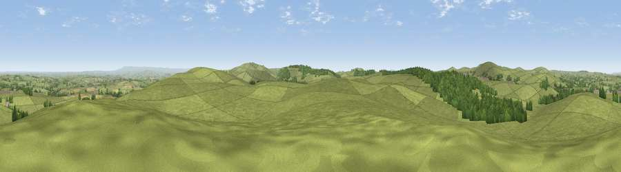

Fox Tor
#10333 in England · top 17% of its area beats it · near Five LanesThe view, rendered

A 360° render of this exact spot computed from the terrain model, tree cover and land cover — summer colours, afternoon light, calibrated against photographs of famous viewpoints. Real trees, hedges and buildings will differ in detail.
The panorama
Grey silhouette: terrain skyline in each direction (720 bearings, Earth curvature and refraction included). Dashed green: skyline with trees (+15 m) and buildings (+8 m) as obstacles. Blue strip: how far the ground is visible on each bearing.
Where the view opens
Wedge length = distance to the farthest visible ground on that bearing (vegetation-aware). Rings at 10, 25 and 50 km.
What fills the view
86% grassland · 12% woodland · 2% cropland ·
Angular shares of the visible panorama (visual magnitude), not map area. Landscape diversity 0.21 (0–1 Shannon).
Key numbers
More beautiful places nearby
The staircase of upgrades: each row has a higher view potential than everything closer. Driving times are estimates from straight-line distance, calibrated against real road routing — check an actual route before setting out.
| Place | Direction | Drive | Score |
|---|---|---|---|
| Ridge | ESE · 2 km | ~5 min | 65.8 |
| Viewpoint near North Hill | ESE · 2 km | ~5 min | 68.6 |
| Viewpoint near Five Lanes | WNW · 3 km | ~7 min | 69.7 |
| Viewpoint near Henwood | SE · 5 km | ~10 min | 76.2 |
| Viewpoint near Henwood | SSE · 7 km | ~14 min | 77.3 |
| Caradon Hill | SSE · 9 km | ~18 min | 78.5 |
| Viewpoint near Lesnewth | NW · 16 km | ~28 min | 82.6 |
| Viewpoint near Boscastle | NW · 17 km | ~30 min | 85.2 |
50.57991, -4.50669 · source: osm peak · position refined by local search. Computed location — check access rights before visiting.